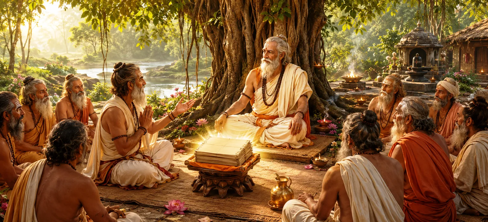

पवित्र ग्रंथों की अथाह महिमा के बारे में सुनकर, नैमिषारण्य के पवित्र वन में एकत्रित ऋषियों ने यह जानना चाहा कि सभी पुराणों में कौन सा पुराण सर्वोच्च है। उनकी पूछताछ केवल जिज्ञासा से प्रेरित नहीं थी, बल्कि कलियुग में भक्ति, ज्ञान, धर्म और मुक्ति प्राप्त करने के लिए सबसे प्रभावी साधन खोजने की सच्ची लालसा से प्रेरित थी। यह अध्याय आध्यात्मिक जांच के महत्व और दिव्य सत्य की महान खोज को उजागर करता है।
शुद्ध हृदय और नेक इरादों के साथ कई प्रसिद्ध संत एकत्र हुए। उनका उद्देश्य आध्यात्मिक सच्चाइयों पर चर्चा करना और मार्गदर्शन प्राप्त करना था जिससे मानवता को लाभ होगा। स्वार्थी इच्छाओं से मुक्त होकर, उन्होंने धर्म के उच्चतम सिद्धांतों को समझने और उन्हें भावी पीढ़ियों के साथ साझा करने के लिए खुद को समर्पित कर दिया।
नैमिषारण्य सदियों से आध्यात्मिक अभ्यास और दिव्य शिक्षा के एक पवित्र केंद्र के रूप में प्रसिद्ध था। अनगिनत ऋषि-मुनियों ने वहां तपस्या की और वातावरण पवित्रता और भक्ति से भर गया। इसे पवित्र ज्ञान पर चर्चा करने और दिव्य अनुभूति प्राप्त करने के लिए एक आदर्श स्थान माना जाता था।
ऋषियों ने समझा कि मानव जीवन अनमोल है और इसे सत्य की खोज के लिए समर्पित होना चाहिए। अस्थायी चिंताओं से विचलित होने के बजाय, उन्होंने ऐसे ज्ञान की तलाश की जिससे स्थायी आध्यात्मिक पूर्ति हो सके। सर्वोच्च सत्य को जानने की उनकी ईमानदार इच्छा उनकी जांच का आधार बनी।
साधकों के लिए उपलब्ध कई पवित्र ग्रंथों में से, ऋषियों ने यह जानना चाहा कि आध्यात्मिक उन्नति के लिए कौन सा पुराण सबसे अधिक लाभकारी है। उन्होंने एक ऐसे धर्मग्रंथ की तलाश की जो अज्ञानता को दूर कर सके, भक्ति को मजबूत कर सके और आत्माओं को मुक्ति की ओर ले जा सके। इस गहन प्रश्न से शिव पुराण की महानता का रहस्योद्घाटन होगा।
आध्यात्मिक विकास सच्चे सवालों से शुरू होता है। जो लोग विनम्रता और भक्ति के साथ सत्य की खोज करते हैं वे स्वयं दिव्य ज्ञान के लिए खुल जाते हैं। ऋषि प्रदर्शित करते हैं कि सार्थक प्रश्न पूछना अज्ञानता का प्रतीक नहीं है बल्कि वास्तविक ज्ञान और आध्यात्मिक परिपक्वता का प्रतीक है।
सच्चा ज्ञान तब शुरू होता है जब ईमानदार साधक सार्थक आध्यात्मिक प्रश्न पूछते हैं।
प्रबुद्ध आत्माओं की संगति आध्यात्मिक विकास और समझ को प्रेरित करती है।
पवित्र ज्ञान की ईमानदारी से खोज आत्मा को सत्य और मुक्ति की ओर ले जाती है।
विशाल ज्ञान और आध्यात्मिक उपलब्धियाँ होने के बावजूद, संतों ने विनम्रता के साथ चर्चा की। उन्होंने समझा कि सच्चा ज्ञान तब बढ़ता है जब कोई सीखने के लिए उत्सुक रहता है। उनका रवैया दर्शाता है कि सबसे विद्वान व्यक्ति भी दिव्य सत्य की गहरी समझ की तलाश में रहते हैं।
ऋषियों ने उन लोगों से मार्गदर्शन मांगा जिनके पास प्रामाणिक आध्यात्मिक ज्ञान था। यह पवित्र ज्ञान को संरक्षित करने और इसे ईमानदारी से साझा करने की शिक्षकों की जिम्मेदारी पर प्रकाश डालता है। वास्तविक निर्देश के माध्यम से, आध्यात्मिक परंपराएँ जीवित रहती हैं और अनगिनत साधकों को लाभान्वित करती रहती हैं।
ऋषि न केवल अपनी आध्यात्मिक प्रगति के बारे में बल्कि सभी प्राणियों के कल्याण के बारे में भी चिंतित थे। वे एक ऐसा मार्ग चाहते थे जिसका अनुसरण विभिन्न क्षमताओं और पृष्ठभूमि के लोग कर सकें। उनकी पूछताछ करुणा और मानवता को आध्यात्मिक उत्थान प्राप्त करने में मदद करने की इच्छा को दर्शाती है।
यह अध्याय सिखाता है कि आध्यात्मिक विकास ईमानदारी से पूछताछ से शुरू होता है। जब प्रश्न विनम्रता, भक्ति और सत्य जानने की सच्ची इच्छा से उठते हैं, तो वे परिवर्तन के शक्तिशाली साधन बन जाते हैं। नैमिषारण्य के ऋषियों की तरह, प्रत्येक साधक को दिव्य ज्ञान प्राप्त करने का साहस विकसित करना चाहिए।
प्रत्येक महान आध्यात्मिक खोज एक गंभीर प्रश्न से शुरू होती है। संत हमें याद दिलाते हैं कि प्रश्न करना संदेह नहीं बल्कि समझ की ओर जाने का मार्ग है। श्रद्धा और ईमानदारी से मांगकर, साधक दिव्य रहस्योद्घाटन का द्वार खोलते हैं।
संतों ने पहले ध्यान से सुनकर और फिर स्पष्टीकरण मांगकर धैर्य का प्रदर्शन किया। यह आध्यात्मिक जीवन में ध्यानपूर्वक सुनने का महत्व सिखाता है। सुनने से समझ गहरी होती है और ज्ञान धीरे-धीरे सामने आता है।
अपने गहन प्रश्न पूछने के बाद, ऋषियों ने स्वयं को पवित्र उत्तर प्राप्त करने के लिए तैयार किया। उनके हृदय विश्वास और प्रत्याशा से भरे हुए थे। इसके बाद जो रहस्योद्घाटन होगा वह शिव पुराण की अद्वितीय महानता और आध्यात्मिक साधकों के लिए एक मार्गदर्शक के रूप में इसकी भूमिका को स्थापित करेगा।
"सच्चाई की खोज तब शुरू होती है जब दिल सच्चे सवाल पूछता है।"
अब ऋषियों ने सर्वोच्च एवं परम कल्याणकारी पुराण को जानने की इच्छा प्रकट की। शिव पुराण की दिव्य उत्पत्ति और विश्व के कल्याण के लिए यह पवित्र ग्रंथ कैसे अस्तित्व में आया, इसकी खोज के लिए अगले अध्याय को जारी रखें।